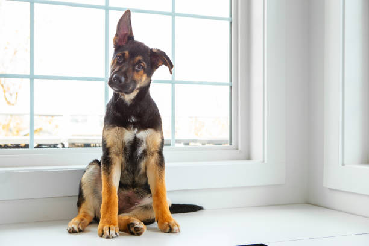
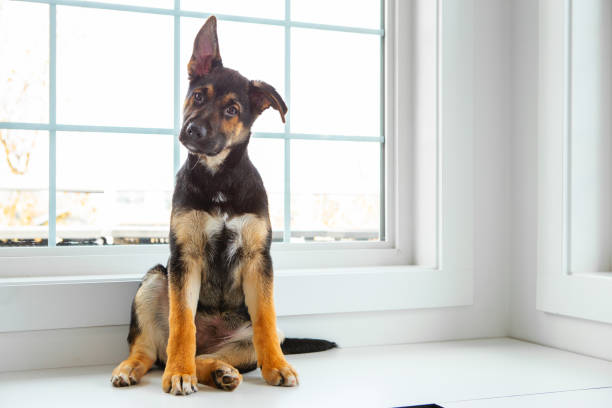

I might not have a dog as pet but hear me out. Dogs are the most popular pet on the planet! I mean try and look around and you will see for yourself. From their adorable puppy phase to their gentle old age, dogs captivate our hearts with their loyalty, affection, and playful personalities, solidifying their position as the world's most loved pet.
Dogs are truly one of a kind, with their unique different breeds. They have a way of showering their human family members with affection, always happy to see them and eager to play or cuddle. But it’s not just their joyful nature that makes them special – it’s also their intelligence, trainability, and ability to sense their owner’s emotions, providing comfort and solace when needed.
Perhaps what makes dogs most special, though, is the depth of their love and loyalty. They stand by their owner’s side through thick and thin, providing a sense of security and companionship that’s hard to find elsewhere. And as they grow old together with their owners, their bond only deepens, a testament to the transformative power of love and companionship.